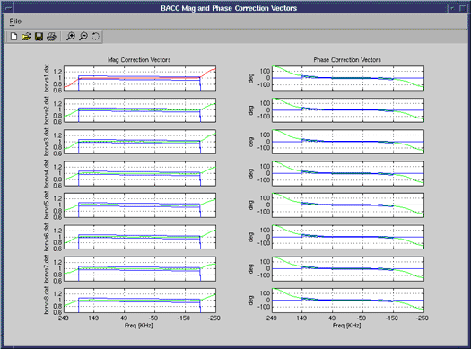

Once the calibration has completed, Pass/Fail information will be displayed on the screen. Select [Continue] to view details on the Magnitude and Phase Vector plots.
The magnitude and phase plots include specification bars to show where the data should reside. Magnitude plots may differ slightly at the edges, but should be relatively flat between -200Khz and +200KHz. For an example of the Magnitude and phase plots, refer to Illustration 2. In Illustration 2, the magnitude data for Receiver 1 is outside the specifications. This can be detected by the red plot line color, versus the other passing green lines. If the graphs for some of the receivers look very different, there may be a receiver hardware problem. If all of the graphs look different, verify the Exciter operation.
Illustration 2: BACC Corrections Plots

This is the end of the calibration process. Refer to Illustration 1 again and run the next two available tests if desired. Process existing BAT data only and Display existing BAT correction data . In order to exit the test, choose option 4 .